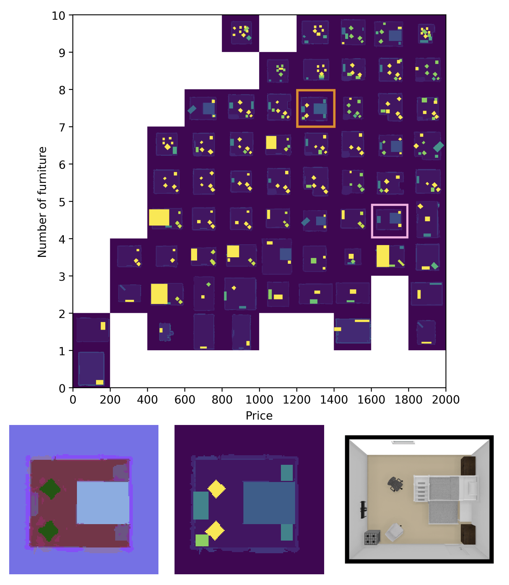

|
|
Surrogate Assisted Generation of Human-Robot Interaction Scenarios
Varun Bhatt,
Heramb Nemlekar,
Matthew C. Fontaine,
Bryon Tjanaka,
Hejia Zhang,
Ya-Chuan Hsu,
Stefanos Nikolaidis
CoRL, 2023
arXiv
We propose using surrogate models to efficiently generate diverse and reproducible failure scenarios in human-robot interaction tasks, reducing the computational cost of traditional simulation-based methods.
|
|

|
Generating diverse indoor furniture arrangements
Ya-Chuan Hsu,
Matthew C. Fontaine,
Sam Earle,
Maria Edwards,
Julian Togelius,
Stefanos Nikolaidis
SIGGRAPH Poster, 2022
arXiv
We propose a method using GANs and a quality diversity algorithm to generate realistic and diverse indoor furniture arrangements, varying in attributes like price and number of pieces.
|
|
|
On the Importance of Environments in Human-Robot Coordination
Matthew C. Fontaine*,
Ya-Chuan Hsu*,
Yulun Zhang*,
Bryon Tjanaka,
Stefanos Nikolaidis
RSS, 2021
project page
/
arXiv
Research on human-robot collaboration often focuses on robot policies for fluent teamwork, overlooking the impact of the environment on coordination. We propose a framework for procedurally generating environments that are stylistically human-like, solvable by human-robot teams, and diverse in coordination behaviors.
|
Service
Serving as a PhD mentor for the Women in Engineering (WiE) at USC.
Serving/Served as a reviewer for ICRA 2025, HRI 2025, THRI 2024, THRI 2023, HRI 2022 (LBR), THRI 2021, HRI 2021, RSS 2021
|
Teaching
CSCI 545: Introduction to Robotics (Master's Level) - Fall 2021, 2023, 2024
CSCI 641/699: Computational Human-Robot interaction (PhD Level) - Spring 2023, 2024
CSCI 170: Discrete Methods in Computer Science (Undergrad Level) - Spring 2021
|
|